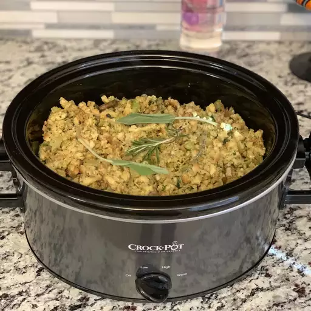

Slow Cooker Stuffing

Grandma's corn pudding is comfort food at its best. This creamy corn casserole is easy to make with both whole kernel and cream-style corn, resulting in a custardy pudding that will be a welcome addition to your holiday table. This easy corn pudding is a little sweet, a little savory, and totally delicious. Trust us: There's a reason this old-fashioned side dish has stood the test of time.
Ingredients
- Butter (1cp): This slow cooker stuffing recipe starts with vegetables sauteed in butter.
- Vegetables (2cp onion, 2cp celery, 12oz mushroom): You'll need onions, celery, and mushrooms.
- Parsley (.25cp chopped): Fresh parsley adds a pop of color and flavor.
- Bread (12cp): Opt for slightly stale bread cut into cubes.
- Spices and Seasonings (1.5tsp salt, 1.5tsp dried sage, 1tsp poultry seasoning, 1tsp dried thyme, .5tsp dried marjoram, .5tsp ground black pepper): This slow cooker stuffing is flavored with salt, dried sage, poultry seasoning, dried thyme, dried marjoram, and ground black pepper.
- Broth (4.5cp, or as needed): Use store-bought or homemade chicken broth.
- Eggs (2 large eggs, beaten): Whole eggs lend moisture and help hold the stuffing together.
Steps
- Melt butter in a skillet over medium heat. Cook and stir onion, celery, mushroom, and parsley in butter until slightly softened, 5 to 8 minutes.
- Place bread cubes in a very large mixing bowl. Spoon cooked vegetables over bread cubes. Season with salt, sage, poultry seasoning, thyme, marjoram, and pepper. Pour in enough broth to moisten, then mix in eggs. Transfer mixture to a slow cooker.
- Cover and cook on High for 45 minutes, then reduce heat to Low and cook for 4 to 8 hours.
- Enjoy!